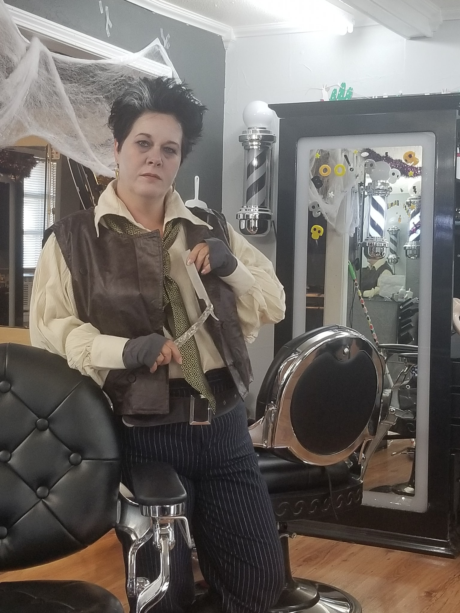

The Team

Rhonda McNair
The person who started it all. Rhonda has XX years in the field and is always honing her skills. When she is not working at the shop, she is at the Wichita Falls Barber Academy sharing her extensive knowledge with the next generation of barbers. She passionate about what she does and is always trying to find ways to improve her skills and her shop not only for herself but for her customers.
Taylor Danielle
Taylor is the daughter of Rhonda and decided to follow in her mother's footsteps. She has been in the industry for XX years, and her passion for barbering derived from her mother. She is on top of the latest trend and will make you looking clean when you leave her chair.